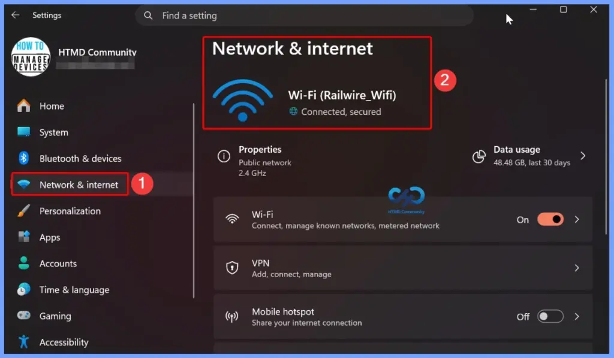
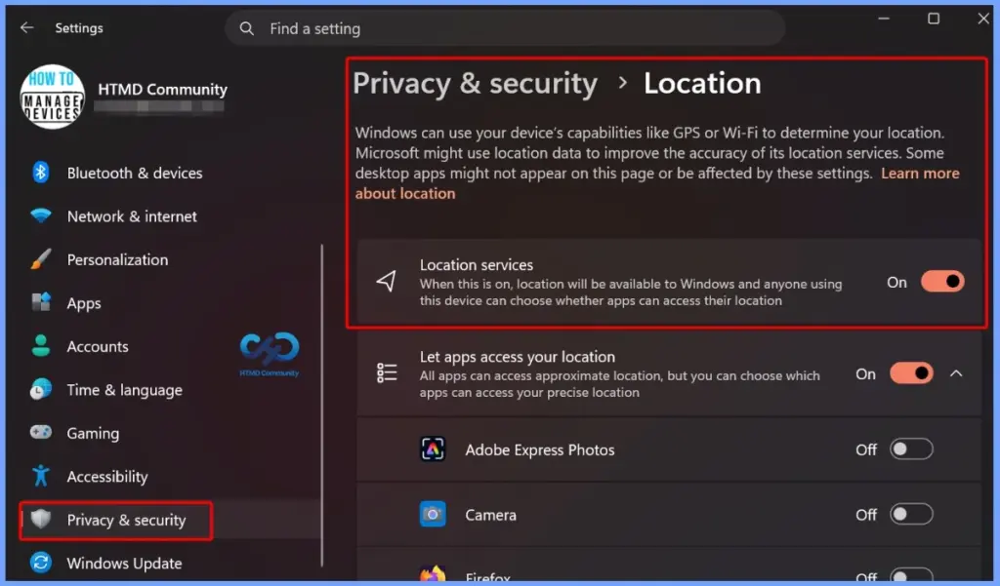

Key Takeaways
- Improves Security: Protects Windows devices by fixing security vulnerabilities and reducing the risk of cyberattacks.
- Fixes Bugs: Resolves software issues and improves overall system stability and reliability.
- Security Improvement: Enhances Secure Boot certificate deployment and strengthens Netlogon authentication for better security and reliability.
- User Experience Improvement: Introduces Point-in-Time Restore and improves File Explorer, Widgets, Bluetooth, and Windows Update with new features and better performance.
- Bug Fix: Resolves Recycle Bin and OneDrive issues, ensuring a smoother File Explorer experience.
- Performance Fix: Improves Bluetooth connectivity, networking reliability, storage efficiency, and overall system responsiveness.
Windows 11 KB5101650 KB5099414 July 2026 Patch and 3 Zero Day Vulnerabilities and 570 Flaws! In the July 2026 Patch, Microsoft introduced new features designed to improve the overall Windows experience. The update adds enhancements to Windows Update for more flexible update management and introduces Point-in-Time Restore, providing an additional recovery option for Windows devices.
Table of Content
Windows 11 KB5101650 KB5099414 July 2026 Patch and 3 Zero Day Vulnerabilities and 570 Flaws
The update expands Voice Access and Voice Typing support to additional languages with improved speech recognition, increases the reliability of the HD Audio driver, and improves Start menu responsiveness when accessed from the taskbar. These enhancements help deliver a more reliable, accessible, and consistent Windows experience for users.
3 Zero Day Vulnerabilities and 167 Flaws
The July 14, 2026 Patch Tuesday security updates include 3 important vulnerabilities, with two confirmed as actively exploited. CVE-2026-56164, an Elevation of Privilege vulnerability in Microsoft SharePoint Server, and CVE-2026-56155, an Elevation of Privilege vulnerability in Active Directory Federation Services (AD FS), have both been detected in real-world attacks, making them a high priority for organizations to patch.
The third vulnerability, CVE-2026-50661, is a Windows BitLocker Security Feature Bypass vulnerability that was publicly disclosed, but Microsoft currently considers it less likely to be exploited, and there are no reports of active exploitation.
| Release Date | CVE Number | CVE Title | Publicly disclosed | Exploitability assessment | Exploited |
|---|---|---|---|---|---|
| Jul 14, 2026 | CVE-2026-50661 | Windows BitLocker Security Feature Bypass Vulnerability | Yes | Exploitation Less Likely | No |
| Jul 14, 2026 | CVE-2026-56164 | Microsoft SharePoint Server Elevation of Privilege Vulnerability | No | Exploitation Detected | Yes |
| Jul 14, 2026 | CVE-2026-56155 | Active Directory Federation Services Elevation of Privilege Vulnerability | No | Exploitation Detected | Yes |

Windows 11 KB5101650 KB5099414 July 2026 Patch
As part of the July 2026 Windows Patch, Microsoft improved networking reliability and performance across Windows devices. The update enhances Wi-Fi and cellular connectivity, improves compatibility with VPN solutions and virtualized environments, reduces network-related blue screen errors, and ensures network settings are retained during Windows upgrades, providing a more stable and reliable networking experience.
| Windows 11 26H1 | Windows 11 25H2 and 24H2 | Windows 11 23H2 |
|---|---|---|
| KB5101649 | KB5101650 | KB5099414 |

Updated Version of Windows 11 after Installing KB5101650 KB5099414 July 2025 Patch
In the July 2026 Patch, Microsoft announced that Windows 11, version 24H2 Home and Pro editions will reach the end of support on October 13, 2026. After this date, these editions will no longer receive security updates, bug fixes, technical support, or other quality updates. To continue receiving the latest protections and features, Microsoft recommends upgrading devices to the latest supported version of Windows 11.
- Windows 11 version 25h2 and 24h2 – July 14, 2026—KB5101650 (OS Builds 26200.8875 and 26100.8875)
- More Details on Windows 11 version Numbers: Windows 11 Version Numbers Build Numbers Major Minor Build Rev.
- Windows 11 Version 23h2 – July 14, 2026—KB5099414 (OS Build 22631.7376)
- Windows 11 Version 26h1 – July 14, 2026—KB5101649 (OS Build 28000.2525)

Windows 11 Features and New Improvements – KB5101650 KB5099414
In the July 2026 Patch, Microsoft improved the Location Services settings to make them easier to understand. When location services are turned off, related options such as Default location and Allow location override are now greyed out, helping users clearly identify which settings are unavailable and reducing confusion when managing location preferences.
| New Improvements | Details |
|---|---|
| Point-in-Time Restore for Windows | Lets you restore your PC to a recent restore point, including apps, settings, and personal files, making it easier to recover from issues. |
| Windows Update Calendar | Allows you to pause Windows updates by selecting an end date for up to 35 days and extend the pause if needed. |
| Widgets Quieter Experience | Widgets no longer open when you hover over them, and notifications and taskbar badges are reduced by default to minimize distractions. |
| Widgets Performance Improvements | Improves Widget reliability, responsiveness, and overall visual experience. |
| Widgets Simplified Dashboard | The Widgets dashboard opens by default the first time you use it, making it easier to access. |
| Widgets Customization | You can personalize Widget settings from the Settings option in the navigation bar. |
| Widgets Alert Management | Dashboard icons display the number of alerts, and badges automatically clear after you leave the dashboard. |
| Widgets Smarter Defaults | Some settings are kept based on your usage, while others are adjusted to reduce interruptions. |
| Secure Boot | Improves automatic Secure Boot certificate deployment with better device targeting and a phased rollout. |
| Authentication | Enhances Netlogon secure channel connections between domain controllers and member servers. |
| Networking | Improves reliability when connecting to shared network resources, including null session connections. |
| Emoji Panel | Replaces the Tenor API with GIPHY for GIFs and restores GIF functionality after installing the latest update. |
| Recycle Bin | Fixes an issue where the wrong file name appeared in the permanent delete confirmation dialog after KB5094126. |
| Storage | Optimizes disk space usage for the CapabilityAccessManager.db-wal file. |
| Screen Tint | Apply a full-screen color overlay to reduce eye strain and improve readability. You can choose a tint, adjust its intensity, or enable it automatically. |
| Magnifier Zoom Control | Enter a specific zoom percentage and adjust the zoom level more precisely. |
| Magnifier Settings | Change zoom increments directly from the Magnifier toolbar without opening Windows Settings. |
| Quick Actions | Hovering over a file now shows shortcuts like Open file location and Ask Copilot for work and school (Entra ID) accounts. |
| Faster Performance | File Explorer now launches faster and responds more quickly. |
| Disk Image Support | Improves File Explorer responsiveness when mounting disk image files. |
| Address Bar Improvements | Better supports complex file paths and provides more reliable suggestion behavior. |
| Microphone Mute Sync | Keeps the microphone mute status synchronized between Windows and Bluetooth headphones that support mute buttons or indicators. |
| Better Device Compatibility | Improves compatibility with Bluetooth audio devices, including faster pairing for AirPods and more reliable microphone performance on Beats Studio Pro headphones. |
| Better Voice Calls | Improves Bluetooth reliability for voice calls when using Hands-Free Profile (HFP) audio devices. |
| Device Management | Windows no longer shows a “Remove failed” error when removing a Bluetooth device if the Bluetooth radio is unavailable or has changed. |
| Settings Experience | Improves the stability of the Bluetooth & devices settings page for a smoother and more reliable experience. |
| Bluetooth Faster Reconnection | Classic Bluetooth audio devices reconnect more quickly after the PC wakes from hibernation. |
| Taskbar | Fixes notification badge counts and visuals so they update correctly across apps. |
| Bluetooth – Better LE Audio Reliability | Improves connection stability and streaming for LE Audio devices, even after disconnections. |
| Bluetooth Phone Link Audio Routing | During outgoing calls, audio stays on the phone until you answer the call on the PC. |
| Bluetooth Do Not Disturb Support | When Do Not Disturb is enabled in Windows, incoming calls from a paired phone no longer ring on the PC. |

Reliability and Stability Fixes in the July 2026 Windows Patch KB5101650 KB5099414
The July 2026 Windows Patch includes several reliability and stability fixes to improve the overall Windows experience. Microsoft resolved OneDrive issues affecting shortcuts and duplicate files in File Explorer, fixed File Explorer rename problems to make renaming items smoother, improved Bluetooth system stability by addressing driver-related issues, and reduced the startup time for LE Audio devices when the microphone is in use.
| Fixes | Details |
|---|---|
| OneDrive Fixes | Fixes issues where the OneDrive shortcut stopped working in administrator mode and where OneDrive files appeared twice in Favorites. |
| Rename Improvements | Fixes issues with repeated text selection during renaming and ensures name changes are reflected immediately. |
| Improved System Stability | Fixes stability issues with certain PC manufacturer Bluetooth drivers, reducing 0x9F errors. |
| Faster LE Audio | Reduces the time it takes for LE Audio devices to start playing sound while the microphone is in use. |
Intune Windows 11 KB5101650 KB5099414 Deployment
You can use Microsoft Intune to deploy the July 2026 Windows cumulative update to your Windows 11 devices. There’s no need to create a new update policy every month because Intune manages monthly quality updates through existing Windows Quality Update policies. If some devices haven’t received the July 2026 update, you can speed up deployment by creating or updating a Windows Quality Update profile in the Intune admin center.
- In the Intune admin center, go to Devices > Manage Updates > Windows Updates > Quality Updates
Read More – Software Update Patching Options with Intune Setup Guide
More Details on Zero Day Out Of Band Patch Deployment Using Intune MEM Expedite Best Option and Intune Reporting Issue: Expedite Windows Security Patch Deployment.

SCCM Windows 11 KB5101650 KB5099414 Deployment
You can deploy the July 2026 Windows 11 cumulative update using SCCM, Windows Server Update Services (WSUS), or Microsoft Intune. In SCCM, start a WSUS synchronization from the Software Library to retrieve the latest updates.
After the sync completes, search for the July 2026 cumulative update using its KB number or by searching for “07-2026 Cumulative Update for Windows 11“. Once identified, deploy the update through your standard monthly patching process to ensure all managed devices receive the latest security and quality improvements.
Direct Download Links of Windows 11 KB5101650 KB5099414
You can manually download the July 2026 Windows 11 cumulative update from the Microsoft Update Catalog. Simply search for the July 2026 cumulative update or its KB number, then download the correct package for your Windows version. This method is useful for manually installing the update on individual devices or on systems that are not managed through Microsoft Intune, SCCM, or WSUS.
| Cumulative Update for Windows 11 | Products | Size | Direct Download |
|---|---|---|---|
| 2026-01 Cumulative Update for Windows 11, version 25H2 for x64-based Systems(KB5101650) | Windows 11 25H2 | 5479.4 MB | Download |
| 2026-01 Cumulative Update for Windows 11 Version 24H2 for x64-based Systems (KB5101650) | Windows 11 24H2 | 5479.4 MB | Download |
| 2026-01 Cumulative Update for Windows 11 Version 23H2 for x64-based Systems (KB5099414) | Windows 11 23H2 | 1112.9 MB | Download |

Need Further Assistance or Have Technical Questions?
Join the LinkedIn Page and Telegram group to get the latest step-by-step guides and news updates. Join our Meetup Page to participate in User group meetings. Also, join the WhatsApp Community and the Whatsapp channel to get the latest news on Microsoft Technologies. We are there on Reddit as well.
Resources
July 14, 2026—KB5101649 (OS Build 28000.2525) | Microsoft Support
Author
Anoop C Nair has been Microsoft MVP for 10 consecutive years from 2015 onwards. He is a Workplace Solution Architect with more than 22+ years of experience in Workplace technologies. He is a Blogger, Speaker, and Local User Group Community leader. His primary focus is on Device Management technologies like SCCM and Intune. He writes about technologies like Intune, SCCM, Windows, Cloud PC, Windows, Entra, Microsoft Security, Career, etc.